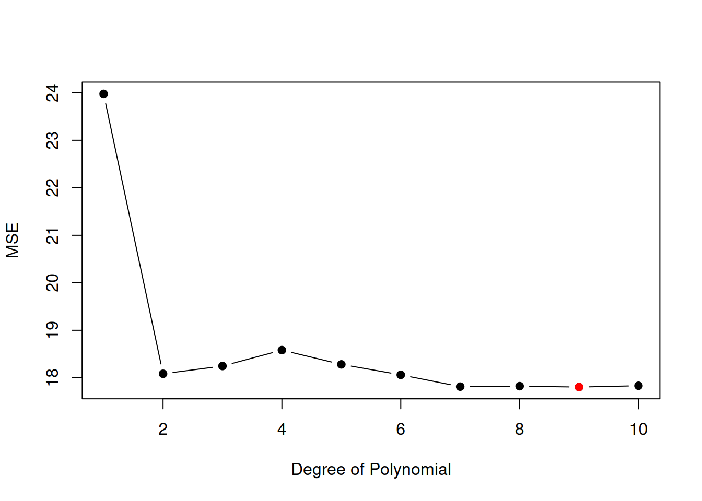
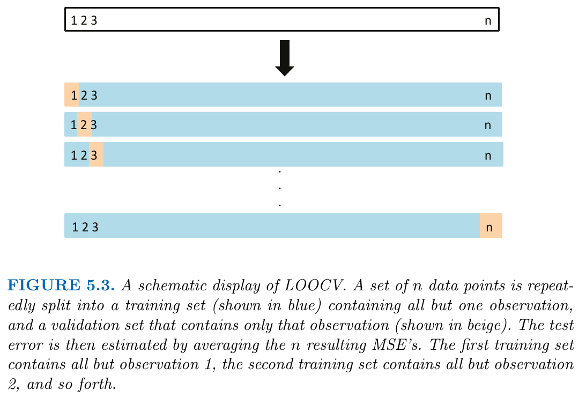
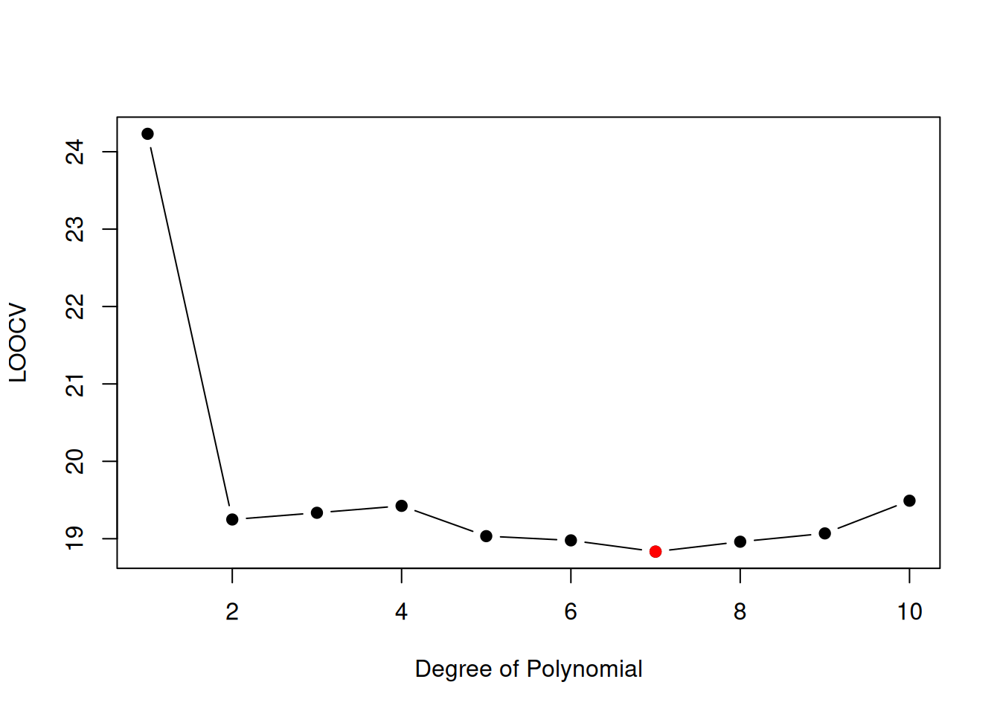
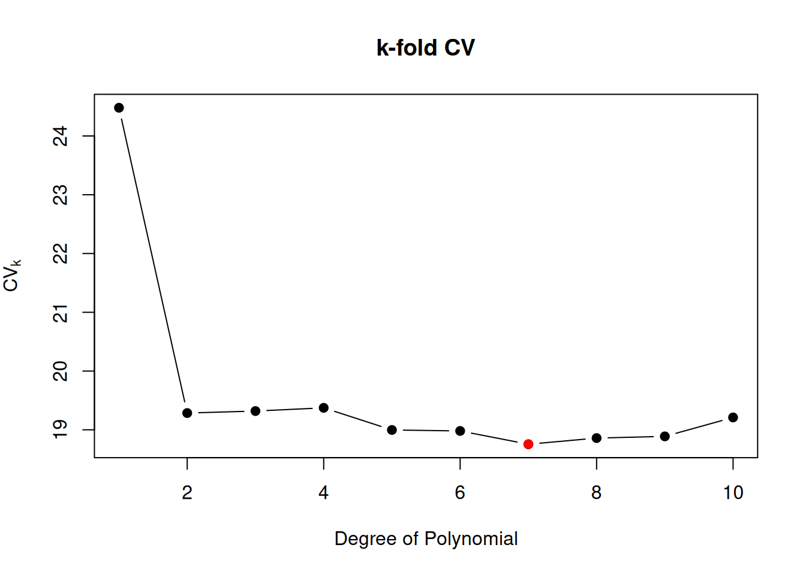

library("ISLR2")
data("Auto")
n <- nrow(Auto) # Sample size
n_Train <- 200 # Sample size of training set
n_Test <- n - n_Train # Sample size of test/validation set
set.seed(1234)
## Index-Sets for selecting the training and validation sets
I_Train <- sample(x = 1:n, size = n_Train, replace = FALSE)
I_Test <- c(1:n)[-I_Train]
## Training data
Auto_Train_df <- Auto[I_Train, ]
## Testing (validation) data
Auto_Test_df <- Auto[I_Test, ]4 Nonparametric Regression and Cross-Validation
4.1 Nonparametric Regression
The linear regression model as considered in Chapter 2 is an example of a parametric regression model because it parametrizes the general regression model \[ Y_i = f(X_i) + \epsilon_i \] using a linear model assumption (Assumption 1 in Chapter 2), such that \[ f(X_i)=\beta_0 + \beta_1 X_{i1} + \dots + \beta_p X_{ip}. \]
Advantages of parametric approaches:
- Typically easy to fit
- Simple interpretation
- Simple inference
Disadvantages of parametric approaches:
- The parametric model assumption can be far from true; i.e. \[ f(X_i) \neq \beta_0 + \beta_1 X_{i1} + \dots + \beta_p X_{ip} \]
Alternative: Non-parametric methods such as K-nearest neighbors regression since non-parametric approaches do not explicitly assume a parametric form for \(f(X).\)
4.2 K-Nearest Neighbors (K-NN) Regression
Let \[ Y_i = f(X_i) + \epsilon_i \] denote the general regression model.
In the following, we do not assume a certain parametric model form for \(f(x),\) but only make the qualitative assumption that \(f\) is a sufficiently smooth function, such that \[ |f(x_1)-f(x_2)|\approx 0\quad\text{if}\quad d(x_1,x_2)\approx 0, \] where \(d(x_1,x_2)\) measures the distance (e.g. \(d(x_1,x_2)=||x_1-x_2||\)) between the points \(x_1\) and \(x_2.\)
Let \(x_0\in\mathbb{R}^p\) denote a certain (multivariate) predictor value at which we want to estimate \[ f(x_0). \]
KNN regression estimates the value of the regression function at a point \(x_0,\) denoted by \(f(x_0),\) using the estimator \[ \hat{f}_K(x_0). \] The estimate is obtained through the following two steps:
-
Identify the \(K\) nearest neighbors of \(x_0.\) Compute the distances between \(x_0\) and each training predictor \(X_1,\dots,X_{n_{\text{Train}}}\) \[
d(x_0,X_1),d(x_0,X_2)\dots,d(x_0,X_{n_{\text{Train}}}).
\] Select the \(K\) training points whose predictors are closest to \(x_0.\) Let \(\mathcal{N}_0\) denote the set of their indices: \[
\begin{align*}
\mathcal{N}_0
& =\{i\in\{1,2,\dots,n_{\text{Train}}\} \; |\; d(x_0,X_i)\text{ is among the $K$ smallest distances}\}
\end{align*}
\] where
- \(\mathcal{N}_0\subset\{1,2,\dots,n_{\text{Train}}\}\)
- \(|\mathcal{N}_0|=K\) (number of elements in \(\mathcal{N}_0\))
- Average the corresponding responses. Estimate \(f(x_0)\) by taking the average of the training responses associated with the \(K\) nearest neighbors: \[ \hat{f}_K(x_0)=\frac{1}{K}\sum_{i\in\mathcal{N}_0}Y_i. \]
These two steps are repeated for every predictor value \(x_0\in\mathbb{R}^p\) at which the regression function is to be estimated.
The performance of the estimator \(\hat{f}_K(x_0)\) depends on
- the choice of \(K\) (smoothing parameter) and
- the choice of distance \(d\)
For real valued predictors, \(X_i\in\mathbb{R}^p\) a usual choice is the Euclidean distance \[ d_E(x_0, X_i) = ||x_0 - X_i||^2 = \sum_{j=1}^p (x_{0j} - X_{ij})^2. \]
Use Standardized Predictors!
Typically, it is important to compute the distances with respect to the standardized (centering, and scaling to unit variance) predictor variables; i.e. \[ d^*_E(x_0, X_i) = ||x^*_0 - X^*_i||^2 = \sum_{j=1}^p (x^*_{0j} - X^*_{ij})^2, \] where \[ x^*_{0j} = \frac{x_{0j} - \bar{X}_{j}}{\sqrt{\frac{1}{n_{\text{Train}}}\sum_{i=1}^{n_{\text{Train}}}(X_{ij}-\bar{X}_{j})^2}} \] and \[ X^*_{ij} = \frac{X_{ij} - \bar{X}_{j}}{\sqrt{\frac{1}{n_{\text{Train}}}\sum_{i=1}^{n_{\text{Train}}}(X_{ij}-\bar{X}_{j})^2}} \] with \(\bar{X}_{j} = \frac{1}{n_{\text{Train}}}\sum_{i=1}^{n_{\text{Train}}}X_{ij}.\)
Otherwise, the distance values could be dominated by one of the \(p\) predictors.
E.g. when one predictor is age (values between \(0\) and \(99\)) and another predictor is yearly income (values between \(0\) and \(12,000,000\)), then the differences in income will dominate the differences in age only because of the different scales.
The problem is now, to find the optimal value for \(K.\)
Idea: Choose \(K\) by minimizing the mean squared (prediction) error.
4.3 Local Mean Squared (Prediction) Error (MSE)
In the following, we focus on the KNN-regression estimator \(\hat{f}_K,\) which is, of course, only one of many possible nonparametric regression estimators.
Alternative Estimators \(\hat{f}(x_0)\)
The KNN regression function estimator \(\hat{f}_K\) is, of course, only one of many examples for nonparametric estimators. Alternative examples are:
- Smoothing splines estimator \(\hat{f}_\lambda\) (
smooth.spline()), where \(\lambda\) is the smoothing parameter. - Polynomial regression estimator \(\hat{f}_p\), where the polynomial degree \(p\) is the smoothing parameter. (Caution: we don’t assume that the true regression function \(f\) is actually a polynomial function. The lack of this assumption renders the polynomial regression function a nonparametric estimator.)
A fair and reliable assessment of an estimator requires testing data, i.e., data which comes from the same data generating process as the training data, but which was not used to compute (train) the estimator.
Let \[ (X_i,Y_i)\overset{\text{iid}}{\sim}(X,Y)\quad i=1,\dots,n_{\text{Train}} \] denote the training data used to compute the estimator \(\hat{f}(x_0),\) and let \[ (X^{\text{Test}},Y^{\text{Test}})\overset{\text{iid}}{\sim}(X,Y). \] denote a test data “point” independent of the training data, where both training and testing data come form the same data generating process \[ Y=f(X)+\epsilon \] with \(Var(\epsilon)=\sigma^2.\)
The most often used measure of the predictor error is the Mean Squared (Prediction) Error (MSE)
The local (i.e., \(x_0\)-specific) Mean Squared (Prediction) Error of \(\hat{f}_K(x_0)\) is given by \[ \begin{align*} \operatorname{MSE}(x_0,K) &= E\left[\left.(Y^{\text{Test}} - \hat{f}_K(X^{\text{Test}}))^2\right|X^{\text{Test}}=x_0\right]\\[2ex] &=\underbrace{E\left[\left(f(x_0)-\hat{f}_K(x_0)\right)^2\right]}_{\text{reducable}}\;+\;\underbrace{\sigma^2}_{\text{irreducable}}\geq \sigma^2, \end{align*} \qquad(4.1)\] where \[ E\left[\left(f(x_0)-\hat{f}_K(x_0)\right)^2\right] \] denotes the reducable mean squared estimation error component of \(\hat{f}_K(x_0),\) and where \[ \begin{align*} \sigma^2 &=Var(\epsilon^{\text{Test}})=Var(\epsilon) \end{align*} \] denotes the irreducible component of the local mean squared (prediction) error \(\operatorname{MSE}(x_0,K).\)
4.3.1 Local Bias-Variance Trade-Off
The mean squared estimation error of \(\hat{f}_K(x_0)\) can be further decomposed into a variance component and a squared bias component, i.e. \[ E\left[\left(f(x_0) - \hat{f}_K(x_0)\right)^2\right] = Var\left(\hat{f}_K(x_0)\right) + \left[\operatorname{Bias}\left(\hat{f}_K(x_0)\right)\right]^2. \qquad(4.2)\]
Variance of \(\hat{f}_K\) at \(x_0\)
\[ Var(\hat{f}_K(x_0))=E\left[\left(\hat{f}_K(x_0) - E\left[\hat{f}_K(x_0)\right]\right)^2\right] \]
Variance
The variance of \(\hat{f}\) at \(x_0\) refers to the amount by which \(\hat{f}_K(x_0)\) would change if we estimated it using a different training data set. Generally, different training data sets will result in a different \(\hat{f}_K(x_0).\) Ideally the estimate for \(f\) should not vary too much between training sets. If a method has high variance then small changes in the training data can result in large changes in \(\hat{f}_K(x_0).\)
🤓 In general, more flexible statistical methods (e.g., KNN-regression with small \(K\)) have higher variance—and vice versa.
Bias of \(\hat{f}\) at \(x_0\)
\[ \operatorname{Bias}(\hat{f}_K(x_0))=E\left[\hat{f}_K(x_0)\right] - f(x_0) \]
Bias
The bias of \(\hat{f}\) at \(x_0\) refers to the error that is introduced by approximating \(f(x_0)\) using a nonparametric estimation approach.
🤓 In general, more flexible statistical methods (e.g., KNN-regression with small \(K\)) have smaller bias—and vice versa.
Note that \[ Var\left(\hat{f}_K(x_0)\right)\geq 0 \] and that \[ \left[\operatorname{Bias}\left(\hat{f}_K(x_0)\right)\right]^2\geq 0. \] Thus, the mean squared (prediction) error \(\operatorname{MSE}(x_0,K)\) can never lie below of \(Var(\epsilon),\) i.e. \[ \begin{align*} \operatorname{MSE}(x_0,K) &=E\left[\left(f(x_0)-\hat{f}_K(x_0)\right)^2\right] + \sigma^2\\ &=Var\left(\hat{f}_K(x_0)\right)+\left[\operatorname{Bias}\left(\hat{f}_K(x_0)\right)\right]^2+ \sigma^2\\ & \geq \sigma^2 = Var\left(\epsilon\right). \end{align*} \]
Example: KNN-Regression
The left panel of Figure 3.16 shows the estimation result for \(K=1\) and the right panel for \(K=9.\)
Case \(K=1:\) KNN-regression interpolates all the (yellow) training data points.
Case \(K=9:\) KNN-regression smoothes the (yellow) training data points.

A small value for \(K\) provides a very flexible fit, which will have
- small bias \[ \operatorname{Bias}(\hat{f}_K(x_0)) = E(\hat{f}_K(x_0)) - f(x_0) =\;\text{small} \]
- large variance \[ Var(\hat{f}_K(x_0)) = \text{large} \]
A large value of \(K\) provides a less flexible fit, which will have
- large bias \[ \operatorname{Bias}(\hat{f}_K(x_0)) = E(\hat{f}_K(x_0)) - f(x_0) =\;\text{large} \]
- small variance \[ Var(\hat{f}_K(x_0)) = \;\text{small} \]
Bias of \(\hat{f}_K(x_0)\)
Small Bias: The estimator \(\hat{f}_K(x_0)\) has small bias if it only uses very close and thus good training data neighbors since, by our qualitative smoothness assumption on \(f\) \[ d(x_0, X_i^{\text{Train}})\approx 0\quad\Rightarrow\quad |f(X_i^{\text{Train}}) - f(x_0)|\approx 0. \] In this case, we can expect that the systematic estimation error is small, i.e. that \(E(\hat{f}_K(x_0))\approx f(x_0)\) (small bias).
Large Bias: The estimator \(\hat{f}_K(x_0)\) has large bias if it also uses more distant and thus bad training data neighbors for which \[ d(x_0, X_i^{\text{Train}})\gg 0\quad\Rightarrow\quad |f(X_i^{\text{Train}}) - f(x_0)|\gg 0. \] In this case, we expect a large systematic estimation error, i.e. that \(E(\hat{f}_K(x_0))\not\approx f(x_0)\) (large bias).
Variance of \(\hat{f}_K(x_0)\)
Large Variance: The estimator \(\hat{f}_K(x_0)\) has large variance if it is computed from a small number (\(K\) small) of training data points such that the law of larger numbers had no chance to reduce variance yet. Thus, for small \(K\), the estimation result \(\hat{f}_K(x_0)\) would change a lot if we re-estimated it using a different training data set.
Small Variance: The estimator \(\hat{f}_K(x_0)\) has small variance if it is computed from a large number (\(K\) large) of training data points such that the law of larger numbers had a chance to reduce variance. Thus, for large \(K\), the estimation result \(\hat{f}_K(x_0)\) would not change much if we re-estimated it using a different training data set.
4.3.2 Choosing the Local Smoothing Parameter \(K\equiv K_{x_0}\)
The locally optimal value of \(K\equiv K_{x_0}\) can be estimated, for every \(x_0\)-value, by choosing that value of \(K\) that minimizes \[ \widehat{\operatorname{MSE}}_{\text{Test}}(x_0,K) =\frac{1}{n_{\text{Test}}}\sum_{i=1}^{n_{\text{Test}}}\left(Y_{i}^{\text{Test}}- \hat{f}_K(x_0)\right)^2 \qquad(4.3)\] with respect to \(K=1,2,\dots.\)
The minimum of \(\widehat{\operatorname{MSE}}(x_0,K)\) with respect to \(K\) estimates the \(x_0\)-specific optimal compromise between:
- the squared bias of \(\hat{f}_K(x_0)\) and
- the variance of \(\hat{f}_K(x_0).\)
However, Equation 4.3 requires local \(x_0\)-specific training data, which usually do not exist in practice.
Local (\(x_0\)-specific) Test Data
Local, i.e., \(x_0\)-specific test data are a realization of a conditional random sample given \(X=x_0,\) \[ (x_{0},Y^{\text{Test}}_{i})\overset{\text{iid}}{\sim}(X,Y)|X=x_0,\quad i=1,\dots,n_{\text{Test}}. \] I.e, the test data \((x_{0},Y^{\text{Test}}_{i}),\) is generated using iid realizations from \[ Y^{\text{Test}} = f(x_0) + \epsilon^{\text{Test}}. \] The test data random sample is independent of the training data random sample whose realization was used to compute \(\hat{f}.\)
In real data problems, where we typically do not have access to such \(x_0\)-specific test data. Thus, we usually determine a globally-optimal \(K\) by minimizing the global test MSE which does not require \(x_0\)-specific test data.
4.4 Global Mean Squared (Prediction) Error (MSE)
In practice, we usually want to find a globally optimal smoothing parameter \(K,\) which gives good estimation results \(\hat{f}_K(x_0)\) for all values \(x_0\) of interest.
Idea: Find the smoothing parameter \(K\) that minimizes the global MSE.
\[ \begin{align*} \operatorname{MSE}(K) &= E\left[\left(Y^{\text{Test}} - \hat{f}_K(X^{\text{Test}})\right)^2\right]. \end{align*} \]
The global MSE is the average of the local \(\operatorname{MSE}(x_0)\) over all possible values of \(x_0,\) i.e. \[ \operatorname{MSE}(K) = E(\operatorname{MSE}(X,K)) = \int \operatorname{MSE}(x,K) f_X(x) dx, \] where \(f_X\) denotes the density of the predictors \(X.\)
Global Test Data MSE
Let \[ \{(X^{\text{Test}}_{1},Y^{\text{Test}}_{1}),(X^{\text{Test}}_{2},Y^{\text{Test}}_{2})\dots,(X_{n_{\text{Test}}},Y_{n_{\text{Test}}}^{\text{Test}})\} \] denote the test data with different predictor values \(X_{1}^{\text{Test}},\dots,X_{n_{\text{Test}}}^{\text{Test}}.\)
Global Test Data
This type of test data is a realization of a random sample \[ (X^{\text{Test}}_{i},Y^{\text{Test}}_{i})\overset{\text{iid}}{\sim}(X,Y),\quad i=1,\dots,n_{\text{Test}}. \] The test data random sample is independent of the training data random sample whose realization was used to compute \(\hat{f}.\)
Note: In real data problems, we can use sample splitting to get access to global test data, for instance, by using one half of the data as training data and the other half of the data as testing data.
Then, the empirical, global test MSE is given by, \[ \begin{align*} \widehat{\operatorname{MSE}}_{\text{Test}}(K)=\frac{1}{n_{\text{Test}}}\sum_{i=1}^{n_{\text{Test}}}\left(Y_{i}^{\text{Test}} - \hat{f}_K(X_{i}^{\text{Test}})\right)^2. \end{align*} \]
The global test MSE is an unbiased estimator of the population version of the global Mean Squared (Prediction) Error of \(\hat{f},\) i.e., \[ \begin{align*} E\left(\widehat{\operatorname{MSE}}_{\text{Test}}(K)\right)= \operatorname{MSE}(K) \end{align*} \]
4.4.1 Choosing the Global Smoothing Parameter \(K\)
The estimate of the globally optimal value of \(K\) is given by choosing that value of \(K\) that minimizes \[ \begin{align*} \widehat{\operatorname{MSE}}_{\text{Test}}(K)=\frac{1}{n_{\text{Test}}}\sum_{i=1}^{n_{\text{Test}}}\left(Y_{i}^{\text{Test}} - \hat{f}_K(X_{i}^{\text{Test}})\right)^2. \end{align*} \] with respect to \(K=1,2,\dots.\)
The minimum of \(\widehat{\operatorname{MSE}}_{\text{Test}}(K)\) with respect to \(K\) estimates the globally optimal compromise between:
- the global squared bias of \(\hat{f}_K\) and
- the global variance of \(\hat{f}_K.\)
4.5 Cross-Validation
In this chapter, we consider a class of methods that allow to estimate the global mean squared (prediction) error MSE.
As our main example, we consider the polynomial regression estimator as a nonparametric estimator \[ \hat{f}_p(x) = \hat{\beta}_0 + \sum_{j=1}^p\hat{\beta}_j x^j, \] where \(x\in\mathbb{R}\) is a univariate predictor, and where the parameters \(\hat{\beta}_0,\dots,\hat{\beta}_p\) are computed using the usual least squares formula, i.e. \[ \begin{align*} \begin{pmatrix}\hat{\beta}_0\\\hat{\beta}_1\\\vdots\\\hat{\beta}_p\end{pmatrix} &=\left(X^{\top} X\right)^{-1} X^{\top} Y, \end{align*} \] with \[ X=\begin{pmatrix} 1&X_{1}&X_{1}^2&\dots&X_{1}^p\\ 1&X_{2}&X_{2}^2&\dots&X_{2}^p\\ \vdots&\vdots&\vdots &&\vdots \\ 1&X_{n_\text{Train}}&X_{n_\text{Train}}^2&\dots&X_{n_\text{Train}}^p \end{pmatrix} \;\text{and}\; Y=\begin{pmatrix}Y_1\\ Y_2\\\vdots\\ Y_{n_\text{Train}}\end{pmatrix} \]
Important
We do not assume (as done in Assumption 1 of Chapter 2) that the true regression function \(f(x)\) is actually a polynomial function. We only assume that the true regression function \(f\) is a sufficiently smooth function. Any smooth function \(f\) can be approximated using a polynomial function (approximation theory).
Thus, the polynomial regression estimator \(\hat{f}_p(x)\) is here used as a nonparametric estimator, where the polynomial degree \(p\) is treated as the smoothing parameter.
Alternative Estimators
The polynomial regression function estimator \(\hat{f}_p\) is, of course, only one of many examples. Alternative examples are:
- Smoothing splines estimator \(\hat{f}_\lambda\) (
smooth.spline()), where \(\lambda\) is the smoothing parameter - KNN-regression estimator \(\hat{f}_K\)
4.5.1 Validation Set Approach
The validation set approach randomly divides the available set of observations into two parts:
- a training set and
- a validation set (or hold-out set)
The model is fit on the training set, and the fitted model is used to predict the responses for the observations in the validation set.

Illustration
Reconsider the Auto data set. In Chapter 3, we found that a model that predicts mpg using horsepower and horsepower\(^2\) predicts better than a model that uses only the linear term. But maybe a cubic or a higher order polynomial regression model predicts even better? The validation set approach can be used to select the degree \(p\) of the polynomial regression model \[
\texttt{mpg}=\beta_0 + \sum_{j=1}^p\beta_j \texttt{horsepower}^j + \epsilon.
\]
Step 1: Randomly split the total data set into mutually exclusive training and test (validation) sets of roughly equal subsample sizes:
- Training set: \(\{(X_i,Y_i), i\in\mathcal{I}_{\text{Train}}\},\) where \(n_{\text{Train}}=|\mathcal{I}_{\text{Train}}|<n\)
- Test set: \(\{(X_i^{\text{Test}},Y_i^{\text{Test}}), i\in\mathcal{I}_{\text{Test}}\},\) where \(n_{\text{Test}}=|\mathcal{I}_{\text{Test}}|<n\)
such that \(n_{\text{Train}}\approx n_{\text{Test}}\) with \(n=n_{\text{Train}} + n_{\text{Test}}\) and \[ \mathcal{I}_{\text{Train}}\cap \mathcal{I}_{\text{Test}}=\emptyset. \] Code for splitting data randomly into training and validation sets:
Step 2: Estimation of the polynomial regression model, e.g., for \(p=2\) using the training set:
Step 3: Validation of the polynomial regression model by computing the test mean squared (prediction) error using the validation set: \[ \begin{align*} \widehat{\operatorname{MSE}}_{\text{Test}}^{ValidationSetApproach}(p) &=\frac{1}{n_{\text{Test}}}\sum_{i\in\mathcal{I}_{\text{Test}}}\left(Y_i^{\text{Test}} - \hat{f}_p(X_i^{\text{Test}})\right)^2, \end{align*} \] where \(\hat{f}_p\) is computed from the training data, but evaluated \[ \hat{Y}_i^{\text{Test}}=\hat{f}(X_i^{\text{Test}}) \] at the test data \(X_i^{\text{Test}},\) \(i\in\mathcal{I}_{\text{Test}}.\)
Repeating Steps 1-3 for a series of polynomial degrees \(p=1,\dots,10\) allows us to search for the polynomial degree with lowest test MSE.
p_max <- 10
MSE <- numeric(p_max)
for(p in 1:p_max){
## Step 1
Train_polreg <- lm(mpg ~ poly(horsepower, degree = p, raw=TRUE),
data = Auto_Train_df)
## Step 2
y_fit_Test <- predict(Train_polreg, newdata = Auto_Test_df)
## Step 3
RSS_Test <- sum( (Auto_Test_df$mpg - y_fit_Test)^2 )
MSE[p] <- RSS_Test / n_Test
}
plot(x = 1:p_max, y = MSE, type = "b",
col = "black", bg = "black", pch = 21,
xlab = "Degree of Polynomial", ylab = "MSE")
points(y = MSE[which.min(MSE)],
x = c(1:p_max)[which.min(MSE)],
col = "red", bg = "red", pch = 21)

Figure 4.1 shows the test MSE values based on one random split of the dataset. The result that \(p=9\) minimizes the test MSE, however, may depend on the random split. Different random splits may lead to different model selection (choices of \(p\)).
The following code repeats the above computations for multiple random splits of the dataset into training and validation sets:
## R = 10 random splits
R <- 10
## Container for the MSE results
MSE <- matrix(NA, R, p_max)
for(r in 1:R){
## Index sets for training and sets
I_Train <- sample(x = 1:n, size = n_Train, replace = FALSE)
I_Test <- c(1:n)[-I_Train]
## Training set
Auto_Train_df <- Auto[I_Train, ]
## Test set
Auto_Test_df <- Auto[I_Test, ]
for(p in 1:p_max){
## Step 1
Train_polreg <- lm(mpg ~ poly(horsepower, degree = p, raw = TRUE),
data = Auto_Train_df)
## Step 2
y_fit_Test <- predict(Train_polreg, newdata = Auto_Test_df)
## Step 3
RSS_Test <- sum( (Auto_Test_df$mpg - y_fit_Test)^2 )
MSE[r,p] <- RSS_Test / n_Test
}
}
matplot(y = t(MSE), type="b", ylab="MSE", xlab="Degree of Polynomial",
pch=21, col="black", bg="black", lty = 1, main="")
for(r in 1:R){
points(y = MSE[r,][which.min(MSE[r,])],
x = c(1:p_max)[which.min(MSE[r,])],
col = "red", bg = "red", pch = 21)
}
Figure 4.2 shows that the validation set approach can be highly variable. The selected polynomial degrees (minimal test MSE) strongly varies across the different random splits and thus depend on the data included in the test and test sets.
A further serious problem with the validation set approach is that the evaluated predictions \(\hat{Y}^{\text{Test}}_i=\hat{f}(X_i^{\text{Test}})\) are based on estimates \(\hat{f}_p\) computed from the training set, where, however, the training set sample size \(n_{\text{Train}}\) is typically substantially smaller than the actual sample size, i.e. \[ n_{{\text{Train}}}\ll n. \] This leads to increased (i.e. biased) test MSE values which do not reflect the actual test MSE values for the total sample size \(n.\)
Leave-One-Out and \(k\)-fold Cross-validation are refinements of the validation set approach that addresses these issues.
4.5.2 Leave-One-Out Cross-Validation (LOOCV)
Like the validation set approach, LOOCV involves splitting the total dataset into a training and a test part.
However, instead of creating two subsets of comparable size, a single observation is used for the test set, and the remaining observations are used for the training set. , i.e.
- Training set: \(\{(X_1,Y_1),\dots,(X_{i-1},Y_{i-1}),(X_{i+1},Y_{i+1}),\dots,(X_{n},Y_{n})\}\) with \(n_{\text{Train}}=n-1\)
- Test set: \(\{(X_i^{\text{Test}},Y_i^{\text{Test}})\}\) with \(n_{\text{Test}}=1\)
The \(i\)th estimate for the test MSE is thus \[ \begin{align*} \widehat{\operatorname{MSE}}_{\text{Test},i}(p) &= \left(Y_i^{\text{Test}} - \hat{f}_p(X_i^{\text{Test}})\right)^2, \end{align*} \] where \(\hat{f}_p\) is computed from the \(n_{\text{Train}}=n-1\) training data points, but evaluated \[ \hat{Y}_i^{\text{Test}}=\hat{f}_p(X_i^{\text{Test}}) \] at the one test data point \(X_i^{\text{Test}},\) \(i\in\mathcal{I}_{\text{Test}}.\)
Since \(\hat{f}_p\) is essentially based on the total dataset, \(\widehat{\operatorname{MSE}}_{\text{Test},i}(p)\) is an (approximately) unbiased (since \(n_{\text{Train}}=n-1\approx n\)) estimate for the test MSE, although a poor estimate with a high variance as it is based on only one observation in the test set.
Repeating this leave-one-out splitting approach for each \(i=1,\dots,n,\) produces \(n\) many estimates of the test MSE: \[ \widehat{\operatorname{MSE}}_{\text{Test},1}(p), \widehat{\operatorname{MSE}}_{\text{Test},2}(p),\dots, \widehat{\operatorname{MSE}}_{\text{Test},n}(p) \]
The LOOCV estimate is then formed by the average of the \(n\) MSE estimates: \[ \operatorname{LOOCV}(p)=\operatorname{CV}_{(n)}(p) = \frac{1}{n} \sum_{i=1}^n\widehat{\operatorname{MSE}}_{\text{Test},i}(p). \qquad(4.4)\]
Figure 5.3 shows schematically the leave-one-out data splitting approach.

Advantages of CV over the Validation Set approach:
- Lower bias. Since the test MSE estimates are based on training sets with sample sizes \[ n_{\text{Train}}=n-1 \approx n \] LOOCV does not overestimate the test error rate as much the validation set approach does.
- Performing LOOCV multiple times, always yields the same result. I.e., there is no randomness due to the training/testing set splits as seen for the validation set approach.
Codes to implement the LOOCV approach for the Auto data example:
MSE_i <- matrix(NA, n, p_max)
## Save starting time of the loop
start_time <- Sys.time()
for(r in 1:n){
## Training set
Auto_Train_df <- Auto[-r, ]
## Testing set
Auto_Test_df <- Auto[r, ]
for(p in 1:p_max){
## Step 1
Train_polreg <- lm(mpg ~ poly(horsepower, degree = p, raw = TRUE),
data = Auto_Train_df)
## Step 2
y_fit_Test <- predict(Train_polreg, newdata = Auto_Test_df)
## Step 3
MSE_i[r,p] <- (Auto_Test_df$mpg - y_fit_Test)^2
}
}
## Save end time of the loop
end_time <- Sys.time()
LOOCV <- colMeans(MSE_i)
plot(x = 1:p_max, y = LOOCV, type = "b",
col = "black", bg = "black", pch = 21,
xlab = "Degree of Polynomial", ylab = "LOOCV")
points(y = LOOCV[which.min(LOOCV)],
x = c(1:p_max)[which.min(LOOCV)],
col = "red", bg = "red", pch = 21)

CV: (Often) Computationally Expensive
LOOCV has the potential to be computationally expensive, since the model has to be fit \(n\) times. Indeed the above code, which represents a rather simple implementation of LOOCV for least squares fits of linear regression models, takesend_time\(-\)start_time \(=\) 6.098 seconds
for the computations which is quite long.
Luckily, for least squares fits of linear/polynomial regression models one can use the following short-cut formula \[ \begin{align*} \operatorname{LOOCV}(p) &=\operatorname{CV}_{(n)}(p) = \frac{1}{n} \sum_{i=1}^n\left(\frac{Y_i - \hat{f}_p(X_i)}{1-h_i}\right)^2, %&=\operatorname{CV}_{(n)} = \frac{1}{n} \sum_{i=1}^n\left(\frac{y_i - \hat{y}_i}{1-h_i}\right)^2 \end{align*} \qquad(4.5)\] where
- \(\hat{y}_i\) is the \(i\)th fitted value from the original least squares fit, based on the total sample size \(n,\) and
- \(h_i\) is the leverage statistic for the \(i\)th observation, i.e. \[ h_i=\left[X(X'X)^{-1}X'\right]_{ii}. \]
The following codes implement this fast LOOCV version:
LOOCV_fast <- numeric(p_max)
## Save starting time
start_time2 <- Sys.time()
for(p in 1:p_max){
PolyReg <- lm(mpg ~ poly(horsepower, degree = p, raw = TRUE),
data = Auto)
h <- lm.influence(PolyReg)$hat
LOOCV_fast[p] <- mean(((Auto$mpg - fitted.values(PolyReg))/(1 - h))^2)
}
## Save end time of the loop
end_time2 <- Sys.time()Indeed, both approaches yield the same LOOCV values
## Minimal absolute difference between
## the naive and the fast implementation:
round(max(abs(LOOCV - LOOCV_fast)), 5)[1] 0end_time2\(-\)start_time2 \(=\) 0.023 seconds
for the computations.
LOOCV is a very general method, and can be used with any kind of predictive modeling; e.g.
- Logistic regression
- Linear discriminant analysis
- Quadratic discriminant analysis
- etc.
and any statistical prediction method discussed in the lecture or in our textbook ISLR2.
Caution: The fast LOOCV Equation 4.5 does not hold in general, but only for least squares fits of linear regression models, which includes, for instance, polynomial regressions, but, for instance, not logistic regression models.
4.6 \(k\)-Fold Cross-Validation
An alternative to LOOCV is \(k\)-fold CV.
This approach divides the total index set \(\mathcal{I}=\{1,2,\dots,n\}\) of the original data data set into \(k\) mutually exclusive subsets (folds) of roughly equal sizes \[ \mathcal{I}_1,\,\mathcal{I}_2,\dots,\mathcal{I}_k \] with \(|\mathcal{I}_1|\approx |\mathcal{I}_k|\approx n/k.\)
These \(k\) index sets allow us construct different training and test sets for each \(j=1,2,\dots,k\)
- Training set: \(\{(X_i,Y_i),\; i\in\mathcal{I}\setminus \mathcal{I}_j\}\) with sample size of \(n_{\text{Train}}\approx n - n/k\)
- Test set: \(\{(X_i^{\text{Test}},Y_i^{\text{Test}}),\;i\in\mathcal{I}_j\}\) with sample size of \(n_{\text{Test}}\approx n/k\)
Each pair of training and test set allows computing an estimate of the test error \[ \widehat{\operatorname{MSE}}_{\text{Test},1}(p),\; \widehat{\operatorname{MSE}}_{\text{Test},2}(p),\;\dots, \widehat{\operatorname{MSE}}_{\text{Test},k}(p), \] where \[ \begin{align*} \widehat{\operatorname{MSE}}_{\text{Test},j}(p) &=\frac{1}{|\mathcal{I}_j|}\sum_{i\in\mathcal{I}_j}\left(Y_i^{\text{Test}} - \hat{f}_p(X_i^{\text{Test}})\right)^2,\quad j=1,\dots,k, \end{align*} \] with \(\hat{f}_p\) being computed from the training data, but evaluated at the test data.
The \(k\)-fold CV estimate is computed by averaging these values \[ \operatorname{CV}_{(k)}(p)=\frac{1}{k}\sum_{j=1}^k\widehat{\operatorname{MSE}}_{\text{Test},j}(p) \qquad(4.6)\]
Figure 5.5 illustrates the data splitting for \(k\)-fold CV.

LOOCV is a special case of \(k\)-fold CV with \(k=n\).
Most often used \(k\)-values in practice are \(k=5\) or \(k=10\).
The following codes illustrate \(k\)-fold CV:
set.seed(123)
## number of folds for k-fold CV
k <- 5
## container for storing the MSE results
MSE_folds <- matrix(NA, k, p_max)
## selector for the folds
folds <- sample(rep(1:k, length = n))
## Save starting time of the loop
start_time <- Sys.time()
for(j in 1:k){
## Training set
Auto_Train_df <- Auto[folds != j, ]
## Testing set
Auto_Test_df <- Auto[folds == j, ]
for(p in 1:p_max){
## Step 1
Train_polreg <- lm(mpg ~ poly(horsepower, degree = p, raw = TRUE),
data = Auto_Train_df)
## Step 2
y_fit_Test <- predict(Train_polreg, newdata = Auto_Test_df)
## Step 3
MSE_folds[j,p] <- mean((Auto_Test_df$mpg - y_fit_Test)^2)
}
}
## Save end time of the loop
end_time <- Sys.time()
CV_kfold <- colMeans(MSE_folds)
plot(x = 1:p_max, y = CV_kfold, type = "b",
col = "black", bg = "black", pch = 21, main="k-fold CV",
xlab = "Degree of Polynomial", ylab = expression("CV"[k]))
points(y = CV_kfold[which.min(CV_kfold)],
x = c(1:p_max)[which.min(CV_kfold)],
col = "red", bg = "red", pch = 21) 
4.7 Parametric versus Nonparametric Regression
Generally, the parametric approach will outperform the non-parametric approach if the parametric form that has been selected is close to the true form of \(f\) and vice versa.
Figure 3.17 provides an example with data generated from a one-dimensional linear regression model:
- black solid lines: true \(f(x)\)
- blue curves: KNN fits \(\hat{f}_K(x)\) using \(K = 1\) (left plot) and \(K = 9\) (right plot).
Observations:
- The KNN fit \(\hat{f}_K(x)\) using \(K = 1\) is far too wiggly
- The KNN fit \(\hat{f}_K(x)\) using \(K = 9\) is much closer to the true \(f(X).\)
However, since the true regression function is here linear, it is hard for a non-parametric approach to compete with simple linear regression: a non-parametric approach incurs a cost in variance that is here not offset by a reduction in bias. 
The blue dashed line in the left-hand panel of Figure 3.18 represents the simple linear regression fit to the same data. It is almost perfect.
The right-hand panel of Figure 3.18 reveals that linear regression outperforms KNN for this data across different choices of \(K=1,2,\dots,10.\) 
Figure 3.19 displays a non-linear situations in which KNN performs much better than simple linear regression. 
Curse of Dimensionality
Unfortunately, in higher dimensions, KNN often performs worse than simple/multiple linear regression, since non-parametric approaches suffer from the curse of dimensionality.
Figure 3.20 considers the same strongly non-linear situation as in the second row of Figure 3.19, except that we have added additional noise (i.e. redundant) predictors that are not associated with the response.
- When \(p = 1\) or \(p = 2,\) KNN outperforms linear regression.
- But for \(p = 3\) the results are mixed, and for \(p\geq 4\) linear regression is superior to KNN.

Observations:
- When \(p=1\), a sample size of \(n=50\) can provide enough information to estimate \(f(X)\) accurately using non-parametric methods since the \(K\) nearest neighbors can actually be close to a given test observation \(x_0.\)
- However, when spreading the \(n=50\) data points over a large number of, for instance, \(p=20\) dimensions, the \(K\) nearest neighbors tend to become far away from \(x_0\) causing a large bias.
4.8 In Class Coding Exercises
Consider the following regression model: \[\begin{align*} Y_i & = f(X_i)+ \epsilon_i\\ & = 5+ 3\sin(2\pi\,X_i) + \epsilon_i, \end{align*}\] where the training data has a sample size of \(n_{\text{Train}}=100,\) the error term is iid normal \[ \epsilon_i\overset{\text{iid}}{\sim}\mathcal{N}(0,1),,\quad i=1,\dots,n_{\text{Train}}, \] and the predictor values are deterministic and equidistant, i.e., \[ X_i=\frac{i}{n_{\text{Train}}},\quad i=1,\dots,n_{\text{Train}}. \]
Problems:
Programm the KNN-Regression estimator \(\hat{f}_K(x_0).\) Compute the KNN-Regression estimation \(\hat{f}_K(x_0)\) for \(K=5\) and \(x_0 = 0.2.\) Compare the result with the true regression function value \(f(0.2).\)
Compute the KNN-Regression estimation for \(K=5\) and a dense \(x\)-grid between 0 and 1 (e.g.
c(1:1000)/1000) and compare the results with the true regression function values using a plot.Approximating the local bias, variance, and mean squared estimation error: Generate \(B=1000\) estimation results \[ \hat{f}_{K,1}(x_0),\hat{f}_{K,2}(x_0),\dots,\hat{f}_{K,B}(x_0) \] for \(x_0 = 0.2\) and \(K\in\{1,2,\dots,35\}.\)
- Plot the estimation results \(\hat{f}_{K,1}(x_0),\hat{f}_{K,2}(x_0),\dots,\hat{f}_{K,B}(x_0)\) along with their sample mean and the true value of \(f(0.2)\) for \(K=5,\) \(K=15,\) and \(K=30.\)
- Use the \(B\) simulated estimation results to approximate the true bias of \(\hat{f}_{K}(x_0)\) for \(K\in\{1,2,\dots,35\}.\)
- Use the \(B\) simulated estimation results to approximate the true variance of \(\hat{f}_{K}(x_0)\) for \(K\in\{1,2,\dots,35\}.\)
- Use the \(B\) simulated estimation results to approximate to true mean squared estimation error of \(\hat{f}_{K}(x_0)\) for \(K\in\{1,2,\dots,35\}.\)
Approximating the local (\(x_0\)-specific) Bias, Variance, and Mean Squared Estimation Error using simulated data
The empirical bias \[ \begin{align*} \frac{1}{B}\sum_{j=1}^B\hat{f}_{K,j}(x_0)-f(x_0) &\approx \operatorname{Bias}\left[\hat{f}_{K}(x_0)\right] \end{align*} \] approximates the true bias of \(\hat{f}_{K}(x_0).\)
The empirical variance \[ \begin{align*} \frac{1}{B}\sum_{j=1}^B\left(\hat{f}_{K,j}(x_0)-\frac{1}{B}\sum_{j=1}^B\hat{f}_{K,j}(x_0)\right)^2 &\approx Var\left[\hat{f}_{K}(x_0)\right] \end{align*} \] approximates the true variance of \(\hat{f}_{K}(x_0).\)
The empirical mean squared estimation error
\[
\begin{align*}
\frac{1}{B}\sum_{j=1}^B\left(\hat{f}_{K,j}(x_0)-f(x_0)\right)^2
&\approx E\left[\left(\hat{f}_{K}(x_0)-f(x_0)\right)^2\right]
\end{align*}
\] approximates the true mean squared estimation error of \(\hat{f}_{K}(x_0).\)